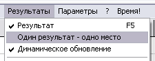
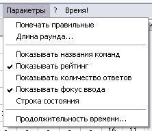

Введение
Основные термины
Работа с командами
Ввод ответов
Подсчет результатов
Сохранение игры
Параметры программы
Лицензионные условия
Авторы
Благодарности
|
Параметры программы
В данном разделе Руководства описаны те параметры, которые заставляют программу вести
себя так, как это было бы удобно пользователю. Если в названии пункта меню в конце указано
многоточие (...), это значит, что после выбора этого пункта меню появится новое окно, если
многоточия нет, значит параметр является переключателем между состояниями "включено" - "выключено".
Параметры игры
У игры есть всего три настройки, а именно:
- Название - строчка, которая фигурирует в заголовке окна и в панели задач, а также
будет указана в начале файла при сохранении результатов
- Наличие разминки - наличие раунда разминки,
которое уже упоминалось в разделе Ввод ответов.
- Количество вопросов, которое также обсуждалось ранее.
Параметры списка команд
- Переходить к вопросу #1 - данный параметр обсуждался
здесь.
- Помечать после перехода также обсуждался
здесь и здесь.
Параметры таблицы результатов

Для таблицы результатов единственным нерассмотренным параметром является возможность присвоения
мест, предложенная Еленой Анатольевной Бурундуковой, когда команды, набравшие одинаковое
количество ответов и рейтинг, занимают не одно и то же место, а несколько (по количеству таких команд).
Для изменения этого параметра щелкните на втором пункте меню "Результат". Надпись на этом пункте
обозначает текущие настройки программы (см. рисунок, на котором изображена надпись по умолчанию).
О параметре "Динамическое обновление" вы можете прочитать здесь.
Поведение программы

На рисунке справа вы видите список пунктов меню "Параметры". Изменение каждого влияет лишь на
внешнее представление данных, но не меняет сути игры:
- Помечать правильные/неправильные - в зависимости от этого параметра программа
по-разному воспринимает первый щелчок на еще пустом столбце вопроса. Если указано
"Помечать правильные" (по умолчанию), то при первом щелчке программа зачтет команде
ответ как "правильный", а все остальные команды считаются ответившими неверно.
Если же указано, что пользователь вводит только неверные ответы (тогда этот пункт меню
должен выглядеть как "Помечать неправильные"), то наоборот: нужно указать
только те команды, которые ответили на этот вопрос неверно.
Предостережение: этот параметр нужно использовать крайне осторожно,
т.к. если существует команда, не сдавшая свой ответ, то Вы, не имея ее ответа,
засчитаете вопрос как правильно отвеченный.
- Длина раунда - изменить длину раунда.
Чтобы игнорировать понятие "раунд" сделайте длину раунда равной 0 или 1.
- Показывать названия команд - вместо номеров столиков команд можно
видеть также и названия команд. Чтобы показать/убрать эти названия, переключите данный
параметр.
- Показывать рейтинг - бывает удобно не видеть рейтинг вопросов, а только лишь
правильность ответа на вопрос командой. Данный параметр влияет не только на отображение
рейтинга в программе, но и на отображение рейтинга в
сохраняемом протоколе игры.
- Показывать количество ответов - параметр был придуман специально для отборочной игры.
На ней команды сдают листы со всеми ответами сразу. Отдельная комиссия проверяет и отмечает
правильность ответов. Остается их только ввести в компьютер. И для простейшей проверки
правильности ввода нужен данный параметр. Если число правильных ответов в компьютере отличается
от числа, указанного на листе команды, значит, нужно перепроверить данные.
- Показывать фокус ввода - терминология программистов. Фокус ввода - это прямоугольный
квадратик, который отличает выделенную ячейку от всех остальных. Очень удобно при вводе
ответов с клавиатуры. Однако, если Вы не пользуетесь клавиатурой, возможно, Вам не захочется
видеть и фокус ввода.
- Строка состояния - маленькая узенькая полоска внизу окна программы, на которой
отображается название команды, а также правильность ответа на указанный курсором мыши
вопрос.
- Продолжительность времени - данный параметр нужен для таймера (который находится в меню
после справки), и позволяет изменять количество секунд, засекаемых таймером.
Таймер
Чаще всего на обсуждение вопроса отводится 1 минута. Для разминки, возможно, потребуется 3 или 5 минут.
Чтобы легко засечь необходимый интервал времени, можно использовать как обычные часы, так и таймер в меню
программы.
Когда таймер остановлен, на этой кнопке отображается надпись "Время!", при нажатии на которую начнется
отсчет указанного Вами времени назад. В любой момент таймер можно остановить, снова щелкнув
по нему мышкой.
|